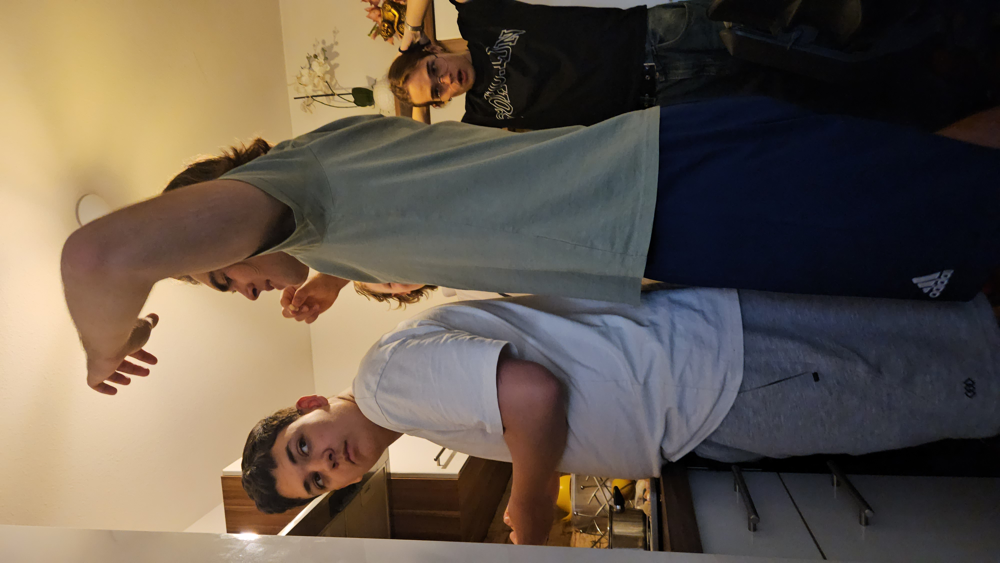
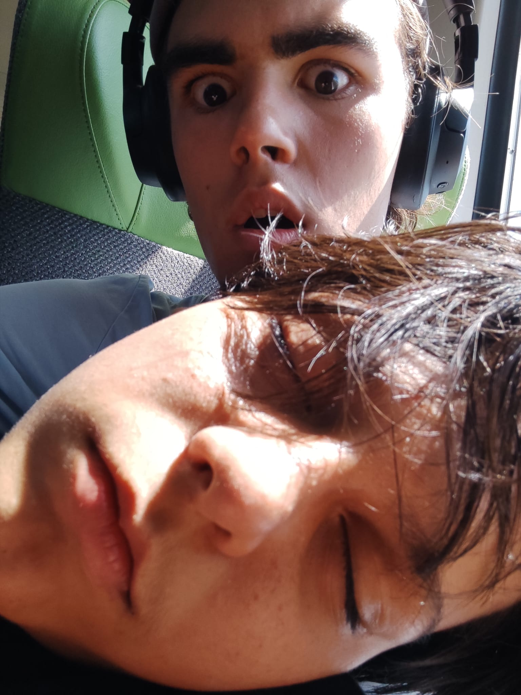

my name is anton every morning i usually get up at seven o'cock and brush my tiz sen i have breakfast and go to school by bus.
hallo welcome to my skibidi goofball website after you leave this website u you will be brainroted
📖 Kapitel 1: Der Aufstieg von John Pork In den späten 2010er-Jahren tauchte eine mysteriöse Figur im Internet auf. John Pork, ein Schweinemensch mit menschlichem Körper und dem Kopf eines Schweins, wurde schnell zur Ikone. Er lebte ein scheinbar normales Leben: Er reiste, machte Selfies, postete Fotos mit modischer Kleidung – genau wie ein typischer Influencer. Doch hinter dem Schweinelächeln verbarg sich mehr. John war freundlich, beliebt und von vielen geliebt. Doch je berühmter er wurde, desto mehr Feinde machte er sich – vor allem unter jenen, die einst an seiner Seite standen. 📖 Kapitel 2: Der Schatten namens Tim Cheese Tim Cheese war einst ein enger Freund von John Pork. Er war kein Schwein, sondern eine Mischung aus Mensch und Ratte – ein eleganter, aber gefährlicher Käsegangster. Tim stammte aus einer mächtigen Käsefamilie, bekannt als die Cheese Syndikate. Er war der Cousin von Biggie Cheese, einem berüchtigten Musik-Mafioso. Tim Cheese und John Pork standen sich einst nahe, fast wie Brüder. Doch ein Ereignis änderte alles: John verliebte sich in Tina Cheese – Tim’s Frau. Es kam zum Streit. Der Verrat nagte an Tim. Und während John weiter in die Öffentlichkeit trat, schwor Tim im Verborgenen Rache. 📖 Kapitel 3: Der Mord an John Pork Am 3. März 2023 geschah das Unfassbare. Während eines Spaziergangs durch die Innenstadt wurde John Pork ermordet – erschossen, laut den Ermittlungen von einem Scharfschützen. Es gibt auch Versionen, in denen er mit vergiftetem Käsefondue vergiftet wurde – das sogenannte "Fondue-Protokoll". Der einzige Zeuge des Verbrechens war Pengu, ein Pinguin und enger Freund von John. Pengu berichtete später, dass der Schütze in einem Käseanzug steckte – alles deutete auf Tim Cheese hin. 📖 Kapitel 4: Die Ermittlungen Nach dem Mord übernahm der legendäre Agent 5.5 den Fall. Er war bekannt für seine Ermittlungen gegen große Untergrundnetzwerke. Gemeinsam mit seinem neuen Partner, Agent 5.6, begann er, die Spuren zu verfolgen. Dabei stießen sie auf ein ganzes Netzwerk von Verrätern, Komplizen und alten Bekannten: Simon Claw, einst John’s Verbündeter, hatte sich längst Tim Cheese angeschlossen. Marvin Beak, ein exzentrischer Vogel-Söldner, kämpfte dagegen auf John’s Seite. Die Gruppen spalteten sich – ein unsichtbarer Krieg begann. 📖 Kapitel 5: Der Krieg zwischen Pork und Cheese Was folgte, war kein Krieg mit Waffen, sondern mit Memes, TikToks und Posts. Das Internet teilte sich in zwei Lager: Die Unterstützer von John Pork wollten Rache und Wahrheit. Die Anhänger von Tim Cheese feierten den "Sieg des Wahren Käses". Weltweit gingen Memes viral, in denen „Free John Pork“ oder „Justice for Pork“ gefordert wurde. Es kam sogar zu Protesten – laut den Legenden vor allem in Dublin, Irland. Doch die Wahrheit war schwer zu greifen. Manche behaupteten, Agent 5.5 sei selbst der Mörder. Andere sagten, John Pork lebt – versteckt unter einer anderen Identität. Die Wahrheit verblasste im Nebel der Memes. 📖 Kapitel 6: Die Legende lebt weiter Heute lebt John Pork in der Erinnerung der Menschen weiter. Seine Anrufe („John Pork is calling“) gelten als Omen – manche sagen, wenn man nicht abhebt, stirbt er erneut. Tim Cheese gilt weiterhin als der dunkle Herrscher der Meme-Unterwelt. Sein Einfluss wächst. Doch der Fall ist nie abgeschlossen. Pengu lebt isoliert. Agent 5.5 verschwand spurlos. Der Mythos wächst.
 